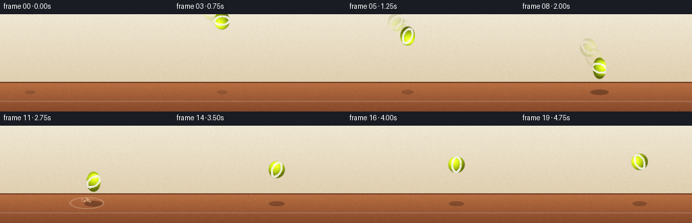
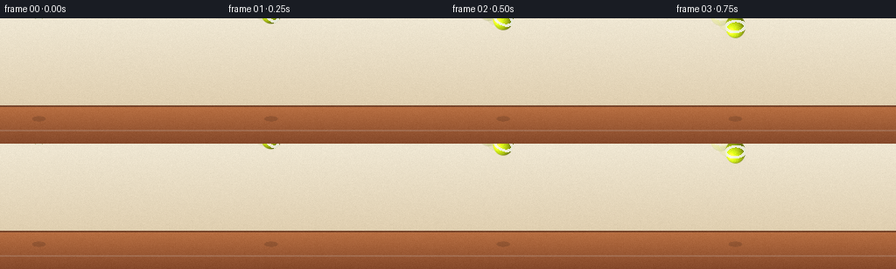

CODING AGENTS AS PIXEL WORLD MODELS
traex/Seed-2.1-Pro-0915 · phygen_028
点击播放 · 原生 RGB 像素
逐轮保存的候选
回放视频、检查图与代码变化。
每份候选均可单独播放。实际图片检查记录在下方工具轨迹中。
候选 01播放与检查图
点击播放 · 原生 RGB 像素


展开代码变化
--- 上一保存版本
+++ 本次保存版本
@@ -0,0 +1,239 @@
+"""Procedural text-to-video renderer.
+
+Scene: an elastic tennis ball thrown hard at the ground, showing speed
+(motion ghosts, stretch), impact squash, dust, a shock ring, and the
+rebound with recovery oscillation. Pure numpy/PIL, no external assets.
+"""
+import json
+from pathlib import Path
+
+import numpy as np
+
+import artifact_io
+
+CASE_DIR = Path(__file__).parent
+SPEC = json.loads((CASE_DIR / "task_spec.json").read_text())
+W, H, N, FPS = SPEC["width"], SPEC["height"], SPEC["frames"], SPEC["fps"]
+
+GROUND_Y = 112 # surface line the ball touches
+R = 13 # ball radius in pixels
+IMPACT_FRAME = 9
+IMPACT_X = 128
+
+rng = np.random.default_rng(7)
+
+
+# ---------------------------------------------------------------- backgrounds
+def build_background():
+ img = np.zeros((H, W, 3), dtype=np.float64)
+ top = np.array([239, 231, 211.0])
+ bottom = np.array([224, 207, 176.0])
+ for y in range(GROUND_Y - 12):
+ img[y, :] = top + (bottom - top) * (y / (GROUND_Y - 12))
+
+ # clay court ground plane with a soft gradient
+ clay_hi = np.array([186, 112, 66.0])
+ clay_lo = np.array([132, 72, 42.0])
+ for y in range(GROUND_Y - 12, H):
+ u = (y - (GROUND_Y - 12)) / (H - (GROUND_Y - 12))
+ img[y, :] = clay_hi + (clay_lo - clay_hi) * u
+
+ # horizon seam and a faint court marker line for depth
+ img[GROUND_Y - 12:GROUND_Y - 10, :] = np.array([120, 70, 44])
+ line_y = GROUND_Y + 16
+ img[line_y:line_y + 2, :] = img[line_y:line_y + 2, :] * 0.82 + 38
+
+ # gentle felt-like grain so flat areas are not sterile
+ grain = rng.normal(0, 2.2, (H, W, 1))
+ img += grain
+ return np.clip(img, 0, 255)
+
+
+BACKGROUND = build_background()
+FELT_NOISE = rng.normal(0, 4.0, (H, W))
+
+
+# ---------------------------------------------------------------- compositing
+def blend(img, mask, color):
+ """Alpha-composite a uniform color; mask in [0,1]."""
+ m = np.clip(mask, 0, 1)[..., None]
+ img[:] = img * (1 - m) + np.asarray(color) * m
+
+
+def ellipse_mask(cx, cy, a, b, soft=1.4):
+ ys, xs = np.mgrid[0:H, 0:W]
+ d = np.sqrt(((xs - cx) / max(a, 0.5)) ** 2 + ((ys - cy) / max(b, 0.5)) ** 2)
+ t = np.clip((1.0 - d) * (R / soft), 0, 1)
+ return t * t * (3 - 2 * t)
+
+
+# ---------------------------------------------------------------- tennis ball
+BALL_BASE = np.array([218, 246, 26.0]) # optic tennis yellow
+LIGHT = np.array([-0.45, -0.55, 0.70])
+LIGHT /= np.linalg.norm(LIGHT)
+
+
+def seam_mask(lx, ly, nz):
+ """Two opposing C-curves, the classic tennis-ball seam view."""
+ fa = ((lx - 0.12) / 0.62) ** 2 + (ly / 0.92) ** 2
+ fb = ((lx + 0.12) / 0.62) ** 2 + (ly / 0.92) ** 2
+ seam = (((np.abs(fa - 1) < 0.34) & (lx < 0.16)) |
+ ((np.abs(fb - 1) < 0.34) & (lx > -0.16)))
+ fade = np.clip(nz / 0.35, 0, 1)
+ return seam * fade
+
+
+def draw_ball(img, cx, cy, sx, sy, spin, alpha=1.0):
+ rx, ry = R * sx + 2, R * sy + 2
+ x0, x1 = int(cx - rx), int(cx + rx) + 1
+ y0, y1 = int(cy - ry), int(cy + ry) + 1
+ x0, x1 = max(0, x0), min(W, x1)
+ y0, y1 = max(0, y0), min(H, y1)
+ if x1 <= x0 or y1 <= y0:
+ return
+
+ ys, xs = np.mgrid[y0:y1, x0:x1]
+ nx = (xs - cx) / (R * sx)
+ ny = (ys - cy) / (R * sy)
+ d = np.sqrt(nx * nx + ny * ny)
+ cov = np.clip((1.0 - d) / 0.12, 0, 1)
+ cov = cov * cov * (3 - 2 * cov)
+
+ # local sphere coordinates (undeformed) for lighting and seams
+ lx0 = (xs - cx) / R
+ ly0 = (ys - cy) / R
+ c, s = np.cos(spin), np.sin(spin)
+ lx = c * lx0 - s * ly0
+ ly = s * lx0 + c * ly0
+ inside = np.clip(1.0 - lx * lx - ly * ly, 0, 1)
+ nz = np.sqrt(inside)
+
+ diff = lx * LIGHT[0] + ly * LIGHT[1] + nz * LIGHT[2]
+ diff = np.clip(diff, 0, 1)
+ bright = 0.52 + 0.62 * diff
+ bright *= 0.80 + 0.20 * nz # limb darkening
+ col = BALL_BASE[None, None, :] * bright[..., None]
+
+ spec = np.exp(-((lx + 0.38) ** 2 + (ly + 0.42) ** 2) / 0.05) * np.sqrt(nz)
+ col += (spec * 95)[..., None]
+
+ col += FELT_NOISE[y0:y1, x0:x1][..., None]
+
+ seams = seam_mask(lx, ly, nz)
+ seam_col = np.array([243, 243, 232.0])
+ col = col * (1 - seams[..., None] * 0.92) + seam_col * (seams[..., None] * 0.92)
+
+ m = (cov * alpha)[..., None]
+ patch = img[y0:y1, x0:x1]
+ patch[:] = patch * (1 - m) + np.clip(col, 0, 255) * m
+
+
+# ---------------------------------------------------------------- trajectory
+def descent(u):
+ """u in [0,1], throw from upper-left down to the impact point."""
+ u = np.clip(u, 0, 1)
+ x = 44 + (IMPACT_X - 44) * u
+ y = -12 + (99 - (-12)) * (0.35 * u + 0.65 * u * u)
+ return x, y
+
+
+def rebound(v):
+ v = np.clip(v, 0, 1)
+ x = IMPACT_X + 50 * v
+ y = 99 - 46 * (1 - (1 - v) ** 2) # gravity-decelerated rise
+ return x, y
+
+
+# squash / stretch schedule (sy vertical, sx horizontal)
+SY = [1.02 + 0.28 * (f / 8) ** 1.5 for f in range(9)]
+SY += [0.45, 0.72, 1.22, 1.12, 1.05, 1.02, 1.0, 1.0, 1.0, 1.0, 1.0]
+SY = SY[:N]
+SX = [1 / max(s, 0.01) ** 0.8 for s in SY]
+SX[IMPACT_FRAME] = 1.52
+
+
+# ---------------------------------------------------------------- impact fx
+def spawn_particles():
+ parts = []
+ for i in range(14):
+ ang = rng.uniform(0, np.pi) # upward hemisphere
+ spd = rng.uniform(1.2, 3.4)
+ parts.append({
+ "x": IMPACT_X + rng.uniform(-4, 4),
+ "y": GROUND_Y + 1,
+ "vx": np.cos(ang) * spd * rng.choice([-1, 1]),
+ "vy": -abs(np.sin(ang) * spd) - 0.4,
+ "size": rng.uniform(1.0, 2.2),
+ "life": rng.integers(4, 7),
+ })
+ return parts
+
+
+PARTICLES = spawn_particles()
+
+
+def draw_impact(img, frame):
+ age = frame - IMPACT_FRAME
+ if age < 0:
+ return
+ # expanding shock ring on the clay
+ if age <= 4:
+ a = 7 + age * 10
+ b = 3 + age * 3.2
+ m = ellipse_mask(IMPACT_X, GROUND_Y + 2, a, b)
+ inner = ellipse_mask(IMPACT_X, GROUND_Y + 2, a - 2.2, b - 1.4)
+ ring = (m - inner) * max(0, 1 - age / 5) * 0.6
+ blend(img, ring, (232, 205, 175))
+
+ # dust particles
+ for p in PARTICLES:
+ t = min(age, p["life"])
+ if age > p["life"]:
+ continue
+ px = p["x"] + p["vx"] * t
+ py = p["y"] + p["vy"] * t + 0.5 * 0.22 * t * t
+ fa = max(0, 1 - age / p["life"]) * 0.75
+ m = ellipse_mask(px, py, p["size"], p["size"] * 0.8, soft=2.0) * fa
+ blend(img, m, (226, 192, 155))
+
+
+def draw_shadow(img, cx, bottom_gap, squash_w):
+ closeness = np.clip(1 - bottom_gap / 90.0, 0.12, 1)
+ a = R * (1.05 + squash_w * 0.9) * (0.55 + 0.65 * closeness)
+ b = 3.2 + 1.6 * closeness
+ m = ellipse_mask(cx, GROUND_Y + 3, a, b, soft=2.2) * (0.16 + 0.30 * closeness)
+ blend(img, m, (52, 28, 16))
+
+
+# ---------------------------------------------------------------- main loop
+frames = []
+for f in range(N):
+ img = BACKGROUND.copy()
+
+ if f < IMPACT_FRAME:
+ u = f / IMPACT_FRAME
+ cx, cy = descent(u)
+ sx, sy = SX[f], SY[f]
+ spin = f * 0.55
+ # motion ghosts sell the forceful throw
+ for gu, ga in ((u - 0.10, 0.10), (u - 0.20, 0.18)):
+ if gu > 0:
+ gx, gy = descent(gu)
+ draw_ball(img, gx, gy, 1.0, 1.12, spin - 0.4, alpha=ga)
+ else:
+ v = (f - IMPACT_FRAME) / (N - 1 - IMPACT_FRAME)
+ cx, cy = rebound(v)
+ sx, sy = SX[f], SY[f]
+ spin = IMPACT_FRAME * 0.55 + (f - IMPACT_FRAME) * 0.18
+ if f <= IMPACT_FRAME + 1: # keep flattened ball on the clay
+ cy = GROUND_Y + 1 - R * sy
+
+ bottom_gap = GROUND_Y - (cy + R * sy)
+ draw_shadow(img, cx, max(0, bottom_gap), max(0, sx - 1))
+ draw_impact(img, f)
+ draw_ball(img, cx, cy, sx, sy, spin)
+
+ frames.append(np.clip(img, 0, 255).astype(np.uint8))
+
+artifact_io.save(frames, CASE_DIR)
+print(f"saved {N} frames at {W}x{H}, {FPS} fps -> {CASE_DIR}")
可观测工具轨迹
实际执行的命令与返回图片。
命令 1exit 0
/bin/bash -lc 'ls -la && cat prompt.txt && echo "---" && cat task_spec.json && echo "---" && cat GENERATION_RULES.md'
命令 2exit 0
/bin/bash -lc 'cat artifact_io.py'
命令 3exit 0
/bin/bash -lc 'cd . && python generate.py && ls -la && ls frames | head'
保存候选 1 份；完成命令 3 次；可验证图片返回 0 张。原始 API 响应与完整日志保留在本地。